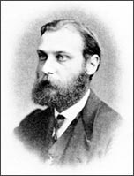

Walther Flemming
1843–1905
After Theodor Schwann determined that every cell contains a nucleus, scientists began their quest to view the inside of the nucleus. Carl Nageli, a well-known German botanist of the time, observed chromosomes in 1842. However, Nageli disregarded them, thinking they were not actually part of the cell but instead something that appeared when he prepared the cell for viewing under the microscope.
Walther Flemming, served as a physician in the Franco-Prussian War and later took jobs as a physiologist at the University of Prague and the University of Kiel in Germany. He found that the purple dye discovered by William Perkin, and used by the clothing industry, stained the nuclear material a darker color than the rest of the cell. This dye enabled Flemming to differentiate the various nuclear structures.
By staining the embryo cells of salamanders, Flemming was able to study the large nuclei of those cells. He was able to watch these cells divide, and he even observed that the nuclear material condensed into threadlike objects. He called these structures "chromatin threads." Today we call them chromosomes. Flemming learned that embryo cells divide in a fixed time frame, and he was therefore able to stain the cells in the various stages of division. He called this process mitosis. The terms that Flemming used for the stages of mitosis and his descriptions of the process are still used today.